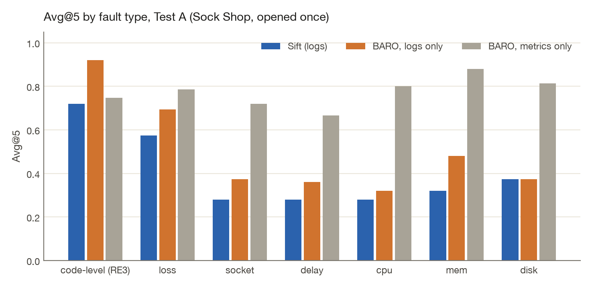
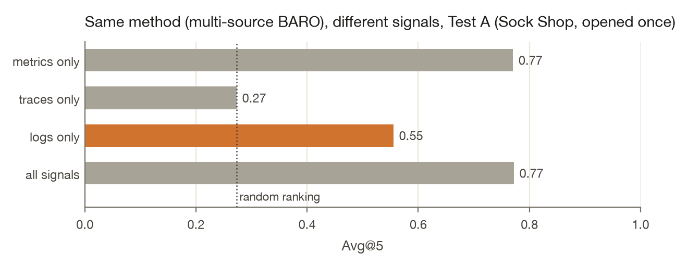

Can an agent find the broken service from logs alone?
Some observability products are betting that logs are enough: metrics and traces can be derived from them, and an agent reading them can find what broke. I built a small version of that path, an engine that takes OpenTelemetry logs, writes them durably, mines templates as they arrive, stores them in Parquet and ranks the services most likely to be the root cause, and then tested the bet on public benchmark data with known answers.
The data is RCAEval, a benchmark of faults injected into real microservice applications, where the faulty service is known for every case. I designed and tuned everything on one application (Online Boutique), wrote down seven predictions, committed them, and only then opened a second application (Sock Shop), once.
What I found
On Online Boutique, Sift reached Avg@5 0.533 from logs alone, against 0.252 for the published
multi-source method given the same logs. On Sock Shop the frozen configuration reached 0.443
(AC@1 0.075) and ranked front-end first in 99% of cases. The published
method on the same logs reached 0.555; given metrics, 0.770. The paired difference,
Sift minus that method on logs, is -0.112 (95% interval [-0.18, -0.04]). 3 of the seven
predictions held.
The cause is specific. Sift counts every template it has never seen before as evidence. Sock Shop's front-end writes new, one-off lines all the time, faults or not; Online Boutique's services rarely do. The fix is to score a service's new templates against its own rate before the alarm. That is the next pre-registered test, on a third application nobody has looked at yet.
Table 1. Test A (Sock Shop, opened once), 120 cases. Avg@5 is the mean of AC@1 to AC@5; a random ranking over the same candidates scores 0.273. Intervals are 95% paired cluster bootstraps over (service, fault) scenarios; a failed run counts as a miss.
| Method | Signal | AC@1 | AC@3 | Avg@5 | 95% CI | Lift over chance | Failed |
|---|---|---|---|---|---|---|---|
| Sift (logs) | logs | 0.075 | 0.608 | 0.443 | [0.34, 0.55] | +0.171 | 0 |
| Error-surge control (logs) | logs | 0.166 | 0.511 | 0.456 | [0.37, 0.55] | +0.183 | 0 |
| Multi-source BARO, logs only | logs | 0.308 | 0.592 | 0.555 | [0.44, 0.67] | +0.282 | 0 |
| Multi-source BARO, traces only | traces | 0.091 | 0.273 | 0.273 | [0.27, 0.27] | +0.000 | 0 |
| Multi-source BARO, metrics only | metrics | 0.108 | 0.958 | 0.770 | [0.73, 0.80] | +0.497 | 0 |
| Multi-source BARO, all signals | all | 0.108 | 0.958 | 0.772 | [0.74, 0.81] | +0.499 | 0 |
| BARO (metrics) | metrics | 0.100 | 0.967 | 0.768 | [0.73, 0.80] | +0.496 | 0 |

The predictions, checked
| Prediction (committed before the test set was read) | Outcome | Evidence |
|---|---|---|
| Logs-only multi-source BARO stays near chance (chance inside its 95% CI) | failed | Avg@5 0.555 [0.44, 0.67], chance 0.273 |
| Sift beats logs-only multi-source BARO (paired 95% CI above zero) | failed | difference -0.112 [-0.18, -0.04] |
| Sift stays below metric-based BARO on Avg@5 | held | 0.443 vs 0.768 |
| Sift's AC@1 is at least metric-based BARO's | failed | 0.075 vs 0.100 |
| Sift is stronger on code-level and LOSS than on CPU, MEM, DISK | held | 0.647 vs 0.324 (mean Avg@5) |
| Most of Sift's correct top-1 picks rest on restart or redeploy evidence | failed | 0 of 9 |
| Sift's test Avg@5 is below its Dev Avg@5 | held | 0.443 vs 0.533 |
3 of 7 predictions held.
What logs carry
To separate "what the signal holds" from "how good the method is", the published method is run unchanged with only its input varied. On Online Boutique the logs-only variant was at chance (+0.002 above a random ranking); on Sock Shop it is clearly above it (+0.282). What logs carry depends on how a system logs.

A check every method gets
A method that names the same service first in most cases looks accurate whenever that service is the answer. The metric-based baseline names a datastore first in most cases, and that datastore is never the answer; Sift's failure on Sock Shop is the same pattern. The table shows it for every method.
| Method | Most often ranked first | Share of cases ranked first | Share of cases it is the answer |
|---|---|---|---|
| Sift (logs) | front-end | 0.99 | 0.07 |
| Error-surge control (logs) | front-end | 0.43 | 0.07 |
| Multi-source BARO, logs only | front-end | 0.42 | 0.07 |
| Multi-source BARO, traces only | None | 0.00 | 0.00 |
| Multi-source BARO, metrics only | session | 0.88 | 0.00 |
| Multi-source BARO, all signals | session | 0.88 | 0.00 |
| BARO (metrics) | session | 0.88 | 0.00 |
The engine
Logs arrive over OTLP/HTTP and are acknowledged only after an fsync of the write-ahead log. Templates are mined online per service and versioned, so every stored line rebuilds byte for byte. Parquet segments, rollups and the template registry are committed together by one atomic manifest, and anything after it is replayed from the log on restart.
Table 2. Crash test: kill the server under load at random moments and at each commit step, restart, resend batches whose outcome is unknown, then check every acknowledged record. Running the same test with recovery deliberately broken lost 390,200 of 826,800 records, so the test can see a failure.
| Crash runs | 100 |
| Acknowledged records | 20,493,200 |
| Lost | 0 |
| Duplicated | 0 |
| OTLP/HTTP throughput, 8 senders | 315,648 records/s |
| Ack latency per 1,000-record batch | p50 19.8 ms, p99 253.6 ms |
| Machine | Apple M2, 8 GB RAM, Node 24.19.0 |
The durability claim is for a process crash: power loss on macOS would also need F_FULLFSYNC and is
not claimed. To try it: pnpm install && pnpm demo replays one real incident through the whole path
in about ten seconds, with no Docker, no download and no model.
What's next
- Sift v2, pre-registered before the third application is opened: new templates scored against the service's own rate before the alarm.
- Investigate before alert: sensors fire, a deterministic gate re-measures, a local model decides whether to open an issue, on forward-only replay with no access to the injection time.
- Cost: lossless compression and query cost on Loghub-2.0 against gzip, zstd, ClickHouse and CLP.